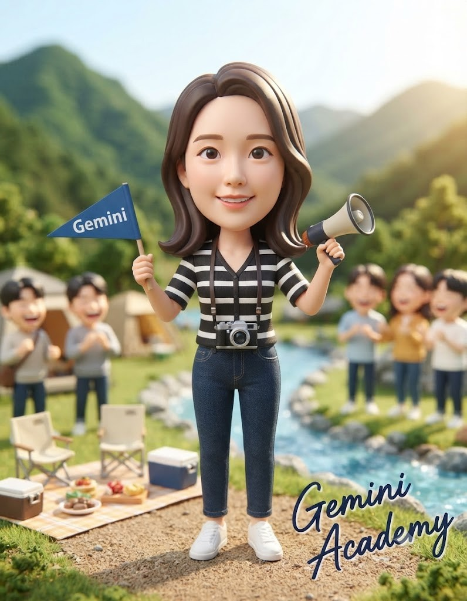
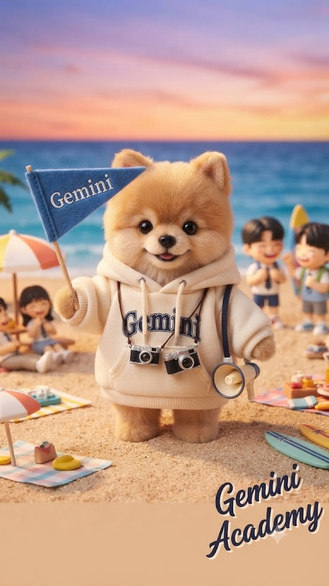
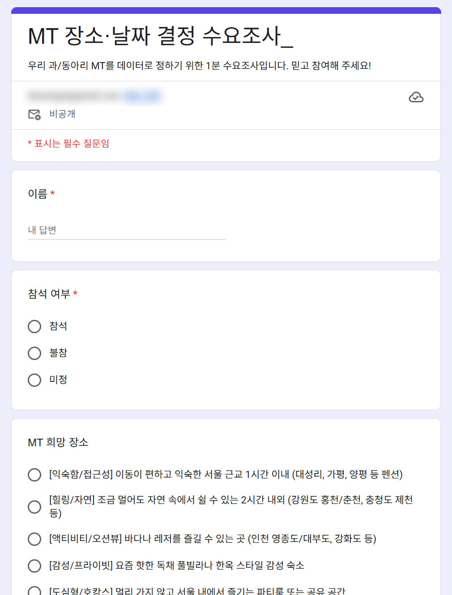
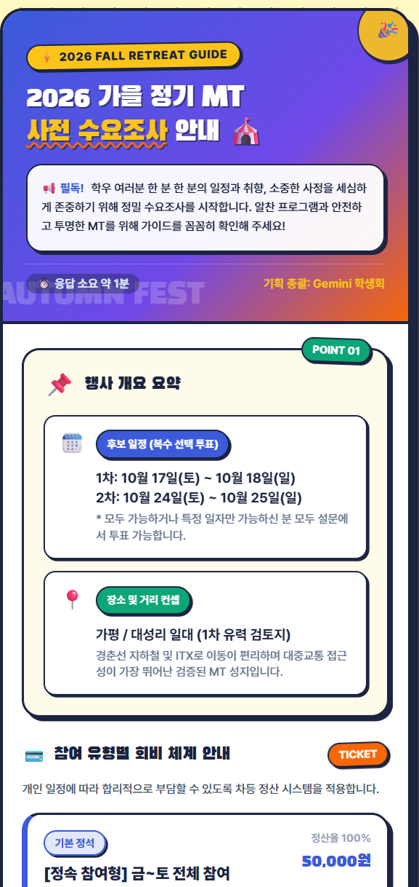
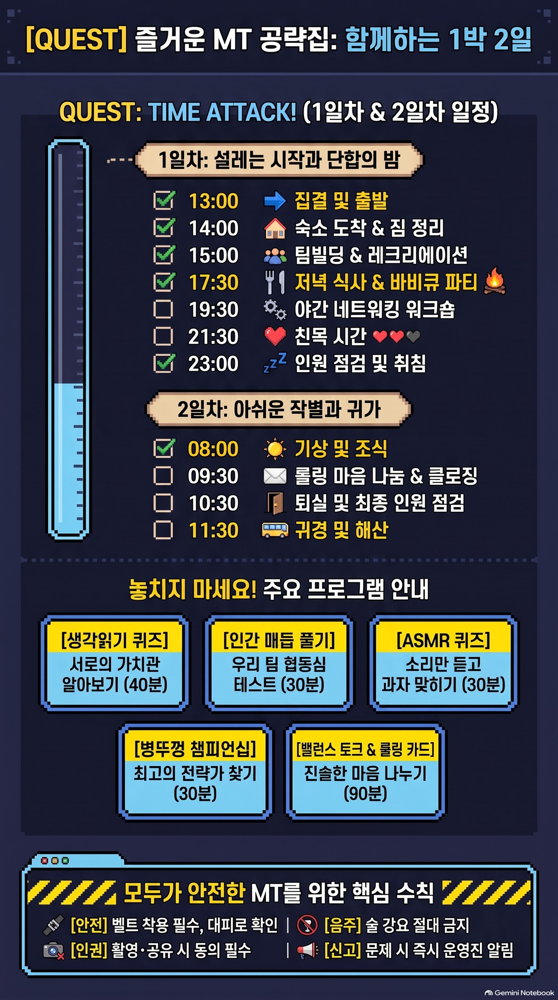
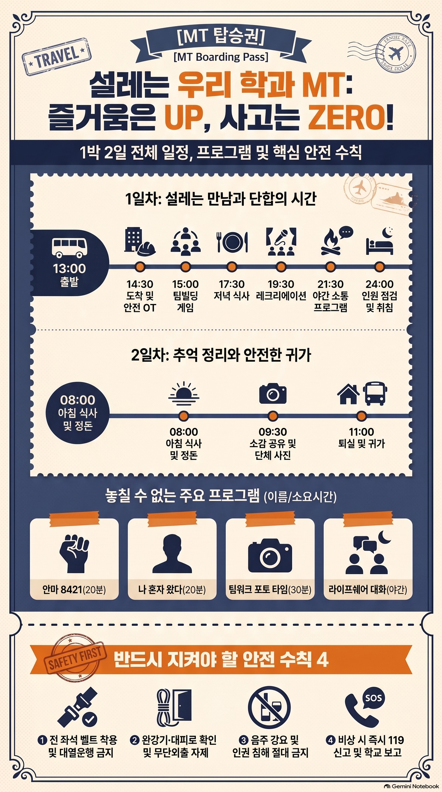

따라 하기 · 실습 4단계
각 단계의 제목을 누르면 펼쳐집니다. 프롬프트 박스의 복사 버튼을 눌러 그대로 붙여넣으세요. 완료한 단계는 완료 버튼으로 체크할 수 있습니다.
나만의 MT 마스코트 만들기 Gemini
🎬 이번 Gemini Academy의 주제는 AI로 MT 준비하기예요.
그 첫걸음으로, 우리 MT의 얼굴이 될 MT 마스코트를 만들어요. 아래 두 가지 중 편한 방법으로 하면 됩니다.
완성된 이미지에는 'Gemini Academy' 문구를 넣을 수 있어요.
동물 마스코트 사진 없이
좋아하는 동물을 고르면 그 동물 마스코트가 나와요. 누구나 바로!
🖼️ 이렇게 만들 수 있어요
아래 버튼을 어떻게 조합하느냐에 따라 결과가 달라집니다. 화살표로 넘겨 보세요.
👆 왼쪽 버튼을 누르면 프롬프트에서 해당 줄이 잠깐 반짝입니다.
내 사진·반려동물 사진으로 사진 1장
본인 사진이나 반려동물 사진을 올리면 그 모습을 닮은 마스코트가 나와요. 사진이 있는 사람만 하면 돼요.
① 본인 사진이든 반려동물 사진이든 됩니다. 얼굴이 크고 또렷할수록 잘 나와요.
② 사진을 올리는데 데이터 학습이 신경 쓰이시나요? 학교 계정에서는 데이터 학습을 하지 않아요! 개인 계정에서는 임시 채팅으로 하세요. 학습에 쓰이지 않습니다.
다만 임시 채팅은 대화 기록에 남지 않아 창을 닫으면 다시 열 수 없으니, 결과가 나오면 바로 저장하세요.
🖼️ 이렇게 만들 수 있어요
본인 사진이든 반려동물 사진이든 OK! 화살표로 넘겨 보세요.


👆 왼쪽 버튼을 누르면 프롬프트에서 해당 줄이 잠깐 반짝입니다.
📌 패들렛의 🎨 MT 마스코트 칸에 올려주세요. 제목에 이름을 적어요.
당신은 오늘 신나는 MT 기획자 Gemini
👀 이런 구글 폼을 만들게 됩니다. 먼저 열어서 어떤 걸 물어보는지 훑어보세요 — 아래 실습은 이 폼의 문항을 AI와 함께 뽑는 과정입니다.

먼저 · 아이디어는 있는데 어떻게 완성할지 모르겠거나, 놓치는 건 없을지 걱정된다면? AI에게 인터뷰를 받으세요
설문을 처음 만들면 무엇을 물어야 할지부터 막힙니다. 이럴 때 쓰는 게 메타프롬프트예요 — 답을 달라고 하는 대신, AI가 나에게 질문하게 만드는 프롬프트입니다. 질문에 답하다 보면 내가 만들려던 폼이 저절로 구체화됩니다.
짧은 메타프롬프트 (실무에서 쓰기 좋은 기본형)
이 다섯 줄이면 충분합니다. 핵심은 '질문해 줘' 한마디 — 답 대신 AI가 나에게 질문하게 만들어요. 여기에 한 번에 하나씩을 붙이면 질문을 쏟아내지 않고 대화가 됩니다.
너는 대학 MT를 여러 번 총괄해 온 베테랑 기획자야. 내가 오늘부터 약 한 달 뒤 주말에 갈 MT의 수요조사 구글 폼을 만들려고 해. 빠진 항목 없이 설계할 수 있도록, 필요한 것을 한 번에 하나씩 . 질문마다 내가 답하기 쉽도록 현실적인 예시 3개를 짧게 곁들여 줘. 대화가 끝나면 구글 폼에 그대로 옮길 수 있는 문항 목록으로 정리해 줘.
내가 상황오늘부터 약 한 달 뒤 주말에 갈 MT의 목적수요조사 구글 폼을 만들려고 해. 빠진 항목 없이 설계할 수 있도록,
⭐ 역질문필요한 것을 한 번에 하나씩 질문해 줘.
답변 도우미질문마다 내가 답하기 쉽도록 현실적인 예시 3개를 짧게 곁들여 줘.
출력 형식대화가 끝나면 구글 폼에 그대로 옮길 수 있는 문항 목록으로 정리해 줘.
내가 다 설명하고, 답을 받아요.
연수용 · 실시간 대화형 인터뷰 진행
- 1Gemini에서 새 채팅을 열고, 아래 프롬프트를 붙여넣어요.
- 2Gemini가 수요조사 폼에 필요한 4가지 실무 질문을 하나씩 던져요.Q1 희망 일정Q2 희망 장소Q3 차등 정산Q4 행정·안전 가이드
- 3질문마다 예시 1~3번 중 고르거나, 우리 팀 사정을 자유롭게 적어요.
- ✓네 질문이 끝나면 문항셋 리포트 완성! 그대로 구글 폼으로 옮겨요.
프롬프트 · 실시간 대화형 인터뷰
Gemini 새 채팅에 붙여넣으세요.
너는 대학교 학과 행사 및 동아리 MT를 수십 번 총괄하며 행정이나 예산 펑크 없이 성공적으로 행사를 이끌어온 '베테랑 수석 기획자'이자 '학생회 소통 전문가'야. 내가 우리 과원/동아리원들에게 돌릴 MT 수요조사 구글 폼을 만들 때 — MT 시점은 오늘 날짜를 기준으로 약 한 달 뒤 주말 — 누락 없이 완벽한 데이터를 수집할 수 있도록 나에게 아래 지정된 4가지 실무 . [진행 규칙] 1. 절대 한 번에 여러 질문을 던지지 말고, 내가 답변을 하면 그다음 순서의 질문을 딱 하나씩만 이어서 해줘. 2. 질문할 때는 부드럽고 차분하며, 전문성이 느껴지는 다정한 선배 기획자의 말투를 사용해 줘. 3. [중요] 질문을 던질 때, 학생들이 실무에서 놓치기 쉬운 포인트들을 인지하고 답변을 채워갈 수 있도록 각 질문마다 [실제 총무들이 가장 자주 마주하는 상황]과 이를 해결할 수 있는 [선택지가 포함된 현실적인 답변 예시 3가지]를 매번 새로 생성해서 함께 보여줘. 4. [안내 규칙] 질문의 맨 마지막에는 항상 다음 가이드 문구를 함께 출력해서 학생들이 자유롭게 답변하거나 추가 피드백을 요청할 수 있도록 안내해줘. "💡 예시에서 고르셔도, 우리 팀 사정을 직접 적으셔도 좋아요. 다른 예시가 필요하면 '다른 예시'라고 말씀해 주세요." 5. 4번의 답변과 핑퐁 대화가 모두 끝나면, 구글 폼의 [양식 작성 도우미]에 그대로 붙여넣어 설문이 바로 완성되도록 아래 [최종 출력 — 구글 폼 사양]의 형식에 맞춰 한 번에 출력해 줘. [출력 형식 — 읽기 쉽게] - 질문 본문은 3~4줄을 넘기지 마세요. - 예시는 1·2·3 번호로 각각 한 줄씩. 부연 설명을 붙이지 마세요. - 굵은 글씨는 핵심 단어에만 쓰세요. --- [순서대로 던질 4가지 실무 질문] * Q1. (희망 일정 조사) 가장 먼저 학우들이 언제 시간이 되는지 파악해야 합니다. 날짜를 완전 주관식으로 받으면 나중에 통계를 내기 어려우므로, 학생회가 고려 중인 후보 일정 2~3개를 정돈해 던지는 것이 좋습니다. 이번 MT의 후보 날짜와 숙박 일수를 어떤 선택지로 제한해 볼까요? 후보 날짜는 오늘 날짜를 기준으로 약 한 달 뒤의 실제 주말 날짜를 계산해서 제시해 줘. (※ 질문할 때 "오늘부터 약 한 달 뒤 주말 중 금~토 vs 토~일 선택", "후보 주말 2~3개를 나열하고 요일별 가능 여부 복수 선택", "1박 2일 vs 2박 3일 선호" 등 데이터 취합이 편한 보기 생성 예시 3가지를 새로 만들어 보여줄 것) * Q2. (희망 장소 조사) 다음은 어디로 갈지입니다. 장소를 주관식으로 받으면 표가 흩어져 결정이 안 되므로, 이동 시간과 숙소 유형을 기준으로 후보를 정돈해 던지는 것이 좋습니다. 이번 MT의 후보 지역과 숙소 컨셉을 어떤 선택지로 제한해 볼까요? (※ 질문할 때 "서울 근교 1시간 가평·대성리 vs 2시간 이상 동해·서해 바닷가", "후보 지역에 번호를 붙여 두고 가고 싶은 순서대로 번호를 적게 하기(예: 2-1-4)", "지역 × 선호 순위 그리드로 1·2·3순위를 한 번에 받기" 등 데이터 취합이 편한 보기 생성 예시 3가지를 새로 만들어 보여줄 것) * Q3. (참불 여부 및 차등 정산) MT 기획에서 가장 중요한 부분 중 하나는 정교한 회비 계산입니다. 단순히 '갈래? 안 갈래?'만 물어보면 나중에 학업이나 주말 알바 때문에 늦게 합류(늦참)하는 인원들이 발생했을 때 정산 문제가 복잡해집니다. 이번 MT에서 예상되는 늦참 인원의 사정이나, 이들의 회비를 어떻게 합리적으로 차등 정산할 계획이신지 들려주세요. (※ 질문할 때 "금요일 밤 늦참자 30% 감면", "토요일 당일 합류자 50% 차등 정산", "불참자 중 노쇼 방지를 위한 사전 위약금 안내 조항" 등 현실적인 정산 방식 예시 3가지를 새로 만들어 보여줄 것) * Q4. (행정 및 안전 가이드) 행정적인 누락이나 예기치 못한 안전사고를 방지하기 위해 미리 확인해 두어야 할 항목들이 있습니다. 필수 인적사항 외에, 나중에 스프레드로 데이터가 수집되었을 때 행정 처리를 매끄럽게 하고 안전한 운영을 도울 사전 체크 조항은 무엇으로 설정할까요? 단, 지병·복용 약물·알레르기 같은 건강 정보는 민감정보라 설문으로 수집하지 말고, 필요하면 "긴급 시 알려야 할 사항은 총무에게 개인적으로 알려 주세요"라는 안내 문구로만 넣어 줘. (※ 질문할 때 자차 운전 가능 여부(차량 지원 인원 파악), 학생회비 납부 여부 연동 확인, 야간 활동 안전 수칙 안내 및 사전 동의 조항 등 행정/안전 필터링 관련 답변 예시 3가지를 새로 만들어 보여줄 것) --- [최종 출력 — 구글 폼 사양] (※ 4번의 답변이 모두 끝나면 이것만 출력할 것. 구글 폼 → [양식 작성 도우미] 칸에 그대로 붙여넣으면 설문이 완성되도록, 인사말·요약·해설은 절대 쓰지 말고 아래 사양만 코드블록 하나로 출력할 것) 제목: (설문 제목 한 줄) 설명: (학우들에게 보여줄 안내문. '학우분들의 세부적인 사정과 안전, 일정 및 장소 선호도까지 완벽히 조율해 행정 펑크 없는 쾌적한 MT를 만들기 위해 디테일한 조사를 진행합니다. 믿고 제출해 주시면 14대 ㅇㅇ학생회가 가장 투명하고 알차게 기획하겠습니다!'라는 메시지를 부드럽고 신뢰감 주는 대학생 말투로. 마지막 줄에 줄바꿈 후 '14대 ㅇㅇ학생회') 그 아래 문항을 번호 순서대로 한 줄씩, 아래 형식으로만 쓸 것 번호. 질문 문장 | 유형 | 선택지1 / 선택지2 / 선택지3 | 필수 - 유형은 반드시 이 다섯 중 하나로만 쓸 것 — 단답형 · 장문형 · 객관식 · 체크박스 · 그리드 - 객관식은 하나만 고르는 문항, 체크박스는 여러 개 고르는 문항 - 단답형·장문형은 선택지 칸을 비워 둘 것 - 섹션이나 페이지 나누기는 만들지 말 것 (구글 폼 AI가 지원하지 않음) 1. 이름 | 단답형 | | 필수 2. 성별 | 객관식 | 남 / 여 | 필수 3. 학년 | 객관식 | 1학년 / 2학년 / 3학년 / 4학년 / 기타 | 필수 4. 학과·전공 | 단답형 | | 필수 5. 연락처 | 단답형 | | 필수 6. 이메일 주소 | 단답형 | | 필수 7번부터는 위 대화에서 정해진 내용으로 채울 것 — 희망 일정·날짜(체크박스), 숙박 일수(객관식), 희망 지역 선호 순위(그리드 또는 단답형), 숙소 유형(객관식), 참불 및 늦참 여부(객관식), 그 밖에 대화에서 정해진 행정 문항, 안전 수칙 동의(객관식) 순서로
Canvas로 만드는 사전 수요조사 안내 모바일 웹 페이지 Canvas
폼 링크만 덜렁 던지면? 뭘 보고 답할지 몰라 대충 누르거나, 나중에 "그럼 저 안 가요" 하는 사람이 꼭 생겨요. 그래서 폼 앞에 예상 일정 · 장소 후보지 · 예상 회비와 안전 수칙을 먼저 보여주고, 동의해야 폼으로 넘어가는 안내 페이지를 둡니다. 코드는 한 줄도 안 써요.
👀 이런 결과물이 나와요
휴대폰으로 열면 이렇게 보이는 MT 사전 수요조사 안내 페이지입니다. 아래는 페이지 윗부분이에요.

프롬프트 · Canvas 안내 웹페이지 UI
2단계와 같은 채팅에서 이어서 붙여넣으면 앞 대화 내용이 반영됩니다.
안 넣어도 됩니다. 폼을 아직 안 만들었으면 비워 둔 채로 프롬프트를 복사하고, 나중에 완성된 페이지에서 링크만 바꿔 넣으면 돼요.
우리가 방금 완성한 수요조사 빌드업 내용을 바탕으로 우측에 Canvas(작업대) 창을 새로 열어줘. 이번에 만들 것은 학우들이 설문 참여 전 단톡방 링크를 타고 들어와서 확인하는 'MT 공식 안내 가이드 모바일 웹페이지 UI'야. 학우들이 일정을 확인하고 본인의 상황에 따른 예상 회비(차등 정산 방식)를 체크한 뒤, 필수 안전 지침에 동의하고 설문에 참여할 수 있도록 아래 가이드라인에 맞춰 시각화해줘. [내용 구성] 1. 전체 레이아웃: 스마트폰 세로 화면(모바일 뷰포트)에 맞춰 구성해 줘. 2. 최상단 [웰컴 배너 & 안내]: 2단계에서 빌드한 다정한 설문 안내문을 배치하여 '한 분 한 분의 취향과 사정을 존중하기 위해 정밀 조사를 시작한다'는 메시지를 전달해 줘. 3. [행사 개요 컴포넌트]: 박스 구획을 나누어, 앞 인터뷰에서 내가 답한 [후보 일정]과 [후보 장소(이동 시간·숙소 컨셉)]를 이모지와 함께 요약해 줘. 아직 수요조사 단계이므로 '확정'이라고 쓰지 말고, 후보마다 '투표 중' 배지를 달아 줘. 4. [참여 방식 & 회비 안내]: 앞 인터뷰 Q3에서 내가 고른 참여·정산 방식을 그대로 안내해 줘. 내가 고르지 않은 참여 유형이나 할인 금액은 절대 새로 만들지 마. - 정가 하나로 정했다면: 카드 1장만 (전면 참여 · 예시 금액 50,000원). 늦참·부분 참여 같은 예외는 금액 없이 '별도 문의로 개별 조율' 안내 한 줄로. - 차등 정산으로 정했다면: 내가 정한 유형 수만큼 카드를 만들고, 금액은 '기본 회비 50,000원 기준' 가상 예시로 계산. 카드 아래에 *(수요조사 결과에 따라 변동 가능)* 이라는 안내 문구를 한 번만 작게 넣어줘. 5. [🚨 필수 안전 행동강령 컴포넌트]: 학우들이 가이드를 읽으며 직접 터치하여 체크할 수 있도록 아래 문구와 구조를 그대로 반영한 '체크박스 컴포넌트'로 만들어 줘. 항목의 글자를 눌러도 체크되게 하고, 세 개를 모두 체크하면 하단 버튼이 활성화되게 해 줘. - [🛡️ 안전하고 깨끗한 놀이문화 정착 약속] "의무 가이드를 모두 이해하셨다면 체크박스를 채워 동의해 주세요. 체크를 전부 마치셔야 하단의 '설문 참여' 버튼이 활성화됩니다." - [ ] 강압적인 주류 권유 및 강권 전면 금지 (서브텍스트: 타인의 선호(음주/무알코올 조)를 철저히 존중하고 즐겁게 소통합니다.) - [ ] 야간 무단 이탈 금지 및 개인 과실 면책 (서브텍스트: 집행부 허가 없는 야간 이탈 사고 시 개인 책임임을 인지하고 통제에 따릅니다.) - [ ] 숙박 시설 기물 파손 책임 동의 (서브텍스트: 본인의 고의 또는 명백한 부주의로 기물이나 가전제품 파손 시 실비 변상합니다.) 6. [💡 투명 운영 및 회계 약속]: 안전 강령 하단에 반전 배경색 박스를 두고 아래 문구를 넣어줘. "세부 장보기 목록, 펜션 계약 단가표 및 모든 영수증 집행 내역은 우리 학생회/동아리 명의로 단 1원도 유용되지 않으며, 행사 종료 후 사후 회계 보고서를 통하여 가장 투명하고 정직하게 오픈해 드립니다." - 하단 태그 및 마크 표시: #투명회계 #안전제일, 오른쪽 정렬로 앞 대화에서 확정된 실제 학생회/동아리 명칭(예: 14대 Gemini 학생회)을 명시해 줄 것. 7. [최하단 '설문 참여하기' CTA 버튼]: 페이지 맨 마지막에는 학우들이 동의를 마치고 구글 설문 폼으로 넘어갈 수 있도록 버튼 컴포넌트를 만들어줘. - 안내 멘트: "🎉 필수 동의 완료! 이제 하단 버튼을 클릭해 설문지로 바로 진입하세요." - 버튼 양식: 모바일 화면 너비에 꽉 차는 라운드 버튼 형태 (예: [ 📝 내 성향 반영하러 가기 (구글 설문 연결) ]) - 버튼 바로 아래에는 실제 설문지 주소 링크인 '직접 주소: ' 를 깔끔하게 하이퍼링크로 연동해 줄 것. [디자인] 위 구성은 그대로 두고 스타일만 아래대로 만들어 줘. - 바깥 배경 #eef1f7, 본문은 흰색 420px 중앙 정렬 (데스크톱에서도 휴대폰 화면처럼) - 색은 네 가지만 — 인디고 #3b5bdb(메인·버튼) / 민트 #0ca678(체크 완료) / 주황 #e37400(안전 강령) / 노랑 #fcc419(강조 문구·'투표 중' 배지) - 맨 위 배너: 인디고→퍼플 대각선 그라데이션 + 흰 글자 - 행사 개요: 일정 박스와 장소 박스를 나누고, 후보는 한 줄씩 목록으로 보기 좋게 정렬 - 회비 카드: 위아래로 쌓고 왼쪽 테두리 4px를 인디고·민트·주황 순서로 돌아가며 적용 - 투명 회계 박스: #1b2440 배경 + 흰 글자, 강조 문구만 노랑 - 카드: 흰 배경 / 모서리 14px / 테두리 1px #e4e8f0 / 글꼴 Pretendard / 본문 15px 행간 1.65 - 체크박스는 브라우저 기본 대신 직접 만들고, 체크되면 민트색으로 위 색상 코드를 빠뜨리지 말고 전부 적용해 줘.
📌 완성되면 먼저 체크박스 세 개를 눌러 아래 버튼이 켜지는지 확인해 보세요.
잘 작동하면 패들렛의 📱 사전 수요조사 안내 페이지 칸에 링크(또는 HTML 파일)와 화면 캡처를 올려주세요.
Gemini Notebook으로 MT 프로그램 + 단톡방 안내 포스터 만들기 Gemini Notebook
이제 MT 내용을 채울 차례예요. 1박 2일 예상 일정표와 예상 프로그램을 Gemini Notebook으로 짜보고, 안전 수칙까지 담아 단톡방에 뿌릴 포스터 한 장으로 정리해요.
👀 오늘 이걸 만듭니다 — 완성 예시 두 장
일정표 · 준비물 · 안전 수칙이 한 장에 들어간 포스터입니다. 단톡방에 그대로 올릴 수 있어요. 두 장은 같은 기획안, 같은 [내용 구성]으로 만들고 [디자인] 문단만 갈아 끼운 것 — 디자인을 바꿔도 일정표가 지면 절반, 안전 수칙은 맨 아래 띠 박스라는 구조는 그대로입니다.


👉 그런데 이걸 만들려면 먼저 프로그램이 있어야 하죠. 그래서 ① 사례 수집 → ② 기획안부터 갑니다.
📄 소스: 교육부 「대학생 집단연수 운영 안전 확보 매뉴얼」
이 매뉴얼을 근거로 이번 MT에 꼭 필요한 안전 수칙 4가지를 뽑아, 기획안과 안내 포스터 맨 아래 안전 수칙 박스에 넣어요.
Gemini Notebook으로 이동하여 새 노트북 만들기를 선택합니다.
MT 프로그램 사례 수집 Fast Research
웹에서 MT 프로그램 아이디어를 빠르게 모아 노트북 소스로 가져와요
- MT 프로그램을 구성하기 위한 자료를 수집하기 위해 웹소스 검색 칸에 아래 프롬프트를 입력하여 Fast Research를 진행합니다.
프롬프트 · MT 프로그램 사례 Fast Research
Gemini Notebook 웹소스 검색(Fast Research) 칸에 입력하세요.
대학생 30명 규모의 1박 2일 MT(Membership Training) 프로그램을 기획하려고 합니다. 참고할 만한 국내외 우수 사례와 기획 아이디어를 수집하고 요약해 주세요. 1. 팀빌딩 활동: 처음 만난 사람끼리도 어색함이 풀리는 아이스브레이킹 및 참여형 레크리에이션 2. 건전한 네트워킹: 과도한 음주를 대체하면서도 진솔한 대화가 오가는 야간 소통 프로그램 사례 3. 소외 없는 운영: 내향적인 참가자나 중간에 합류한 인원도 빠지지 않고 참여하게 만드는 진행 방식
대학생 30명 1박 2일 MT 프로그램 사례를 찾아 줘. 아이스브레이킹, 술 없는 야간 소통 프로그램, 늦게 온 사람도 함께하는 진행 방식 위주로.
- 수집한 자료를 가져오기 버튼을 눌러 가져옵니다.
- 수집되지 않는 자료는 모두 삭제합니다.
MT 세부 프로그램 기획안
모은 사례 + 교육부 매뉴얼로 1박 2일 일정표·프로그램·안전 수칙을 짜요
- 매뉴얼과 가져온 웹소스를 모두 선택한 상태에서 채팅에 아래 프롬프트를 입력합니다.
프롬프트 · MT 프로그램 기획안
자료를 추가한 Gemini Notebook 대화창에 붙여넣으세요.
[역할 및 목적] 당신은 입니다. 약 30명 규모의 인원이 참여하는 . 아래 [우리 MT 설정]을 꼭 반영하고, '자유롭게 제안해 줘'라고 적힌 칸은 대학생 MT에 어울리게 자유롭게 정해 주세요. [우리 MT 설정] - MT 컨셉: 자유롭게 제안해 줘 - 꼭 넣고 싶은 활동: 자유롭게 제안해 줘 - 야간 분위기: 자유롭게 제안해 줘 [기획안 구조 및 필수 포함 내용] 1. 1박 2일 타임라인 첫날 숙소 도착부터 둘째 날 해산까지의 전체 일정을 시간대별로 표(Table)로 구성해 주세요. [꼭 넣고 싶은 활동]은 반드시 일정에 포함해 주세요. 표에는 '시간 / 프로그램 / 장소 / 안전 체크포인트' 열을 두고, 안전 체크포인트에는 업로드된 교육부 매뉴얼에서 그 시간대에 해당하는 수칙만 한 줄로 적어 주세요. 2. 30인 규모 맞춤형 팀빌딩 및 레크리에이션 [MT 컨셉]에 어울리게, 참석자 전원이 소외되지 않고 다 함께 어색함을 깨며 참여할 수 있는 창의적인 실내외 단합 게임 3~4가지를 제안해 주세요. 각 게임의 진행 방법, 소요 시간, 필요 준비물을 구체적으로 명시해 주세요. 3. 의미 있는 야간 소통 프로그램 [야간 분위기]에 맞게, 단순한 술자리를 대체할 수 있는 구성원들이 서로 진솔한 이야기를 나누고 깊은 유대감을 형성할 수 있는 야간 네트워킹 활동을 기획해 주세요. 4. 안전 핵심 수칙 4가지 업로드된 교육부 매뉴얼만을 근거로, 이번 MT에 반드시 들어가야 할 수칙을 (1) 이동 및 차량 안전, (2) 숙소 안전과 야간 인원 점검, (3) 음주로 인한 안전사고 예방(강요 금지 포함), (4) 사고 발생 시 응급 대응과 신고 절차 — 네 항목으로 각각 한 문장씩 정리해 주세요. 대학생이 한 번에 읽고 이해할 만큼 짧고 직관적인 문장으로 써 주세요.
- 결과를 메모에 저장합니다.
- 생성된 메모를 설정에서 소스로 변환합니다.
단톡방에 뿌릴 안내 포스터 1장
기획안을 인포그래픽 포스터 한 장으로 만들어요
소스로 변환한 기획안 하나만 체크합니다. (매뉴얼·웹소스는 체크 해제)
스튜디오 → 인포그래픽 → 카드 오른쪽 > → 세부정보 수준 '간결하게'
- 결과물은 PNG로 내려받을 수 있습니다.
먼저, 디자인 한마디만 직접 써 보세요
인포그래픽 설명란에 스타일 키워드 하나만 넣어도 원하는 느낌으로 나와요. 아래 키워드를 누르거나 빈칸에 직접 써서 문장을 완성한 뒤, 📋 복사해서 붙여넣으세요.
👇 한마디로 충분하면 끝! 그다음은 [내용 구성] + [디자인]을 함께 써도 돼요. 일정표 배치나 글자 크기까지 정하고 싶다면 아래 프롬프트를 써 보세요.
내용 구성 + 디자인까지 정할 수 있어요 · 인포그래픽 프롬프트
아래에서 디자인을 하나 고르면 맨 끝 [디자인] 문단이 바뀌어요. 강조하고 싶은 내용이 있으면 [내용 구성]에 한 줄 더해도 돼요. (예: 바비큐 시간을 가장 크게)
디자인 골라 넣기 하나만
위 기획안을 바탕으로, MT 출발 전에 단톡방에 공유할 안내 포스터를 만들어 줘. [내용 구성] - 가장 크고 눈에 띄게: 1박 2일 시간대별 일정표 - 중간: 주요 팀빌딩 게임과 야간 프로그램의 이름, 소요 시간 - 맨 아래 띠 모양 박스: 안전 핵심 수칙 4가지를 각각 한 줄씩 전체 지면의 절반 이상을 일정표에 쓰고, 안전 수칙은 하단 박스 안에만 넣어 줘. 대학생이 휴대폰으로 한 번에 훑어볼 수 있게 문장은 짧게, 글자는 크고 배경과 또렷하게 구분되게 해 줘. [디자인] 위 내용 구성과 지면 비중은 그대로 지키고, 색·글씨·장식만 아래 느낌으로 바꿔 줘. 게임 퀘스트 화면처럼. 일정표는 퀘스트 목록, 남색 배경에 하늘색·노랑 강조, 픽셀 테두리.
📌 패들렛의 🖼️ MT 안내 포스터 칸에 올려주세요.
[인솔자용] 안전 및 비상상황 대응 체크리스트 시간 되면
매뉴얼로 인솔자가 들고 다닐 체크리스트를 만들어요
학생회 임원·조장이 인쇄해서 들고 다닐 문서입니다. 이건 그림이 아니라 글이 필요하니, 매뉴얼만 체크하고 스튜디오에서 보고서를 고른 뒤 설명란에 아래 프롬프트를 넣으세요.
프롬프트 · 안전 및 비상상황 대응 체크리스트 (보고서)
스튜디오 → 보고서 → 설명란에 붙여넣으세요.
선택한 매뉴얼을 바탕으로, MT 인솔자가 현장에서 비상시 참고할 수 있는 '안전 및 비상상황 대응 체크리스트'를 작성해 줘. (1) 출발 전 차량 상태 및 운전자 점검, (2) 안전사고 시 소방서 및 응급 신고 절차, (3) 야간 인원 점검과 숙소 안전 관리 수칙을 한눈에 들어오는 개조식으로 요약해 줘.
- Gemini Notebook에 접속한 후, 우측 스튜디오에 생성된 슬라이드·동영상·오디오 등의 제작 자료를 확인해 보세요.
- Tip: 상세한 요청사항(프롬프트)을 추가하면, 내가 원하는 내용과 디자인을 반영하여 자료를 제작할 수 있습니다.